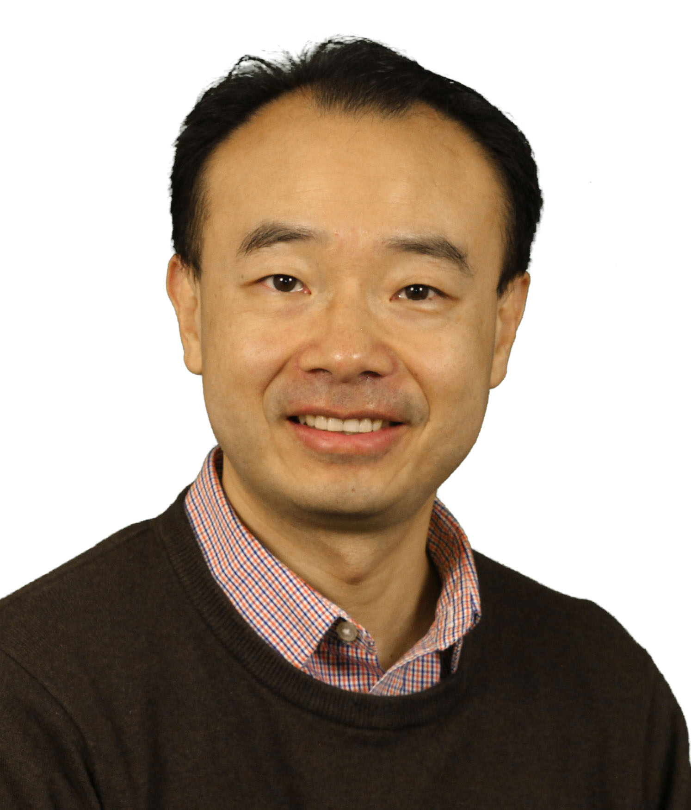

General Chair Welcome
Dear colleagues, friends, and fellow EOS/ESD enthusiasts,
On behalf of EOS/ESD Association, Inc. and the 2017 Symposium Steering Committee, I would like to personally welcome you to the 39th annual EOS/ESD Symposium. We are returning to the beautiful Tucson, AZ area, where this year’s event will be held at the Westin La Paloma Resort. With its rolling mountains and miles of cactus, I encourage you to dive into the hot topics of this year’s EOS/ESD presentations, discussions, and exhibitions, and at the same time, take some time off to enjoy the natural beauty!
Continuing its long tradition, the 2017 EOS/ESD Symposium will address the latest research on EOS and ESD in the rapidly changing world of electronics. To overcome the ever-changing challenges from the sensibility of advanced technologies, progress has to be made in the form of creative ESD design, innovative, comprehensive, and predictive verification of the control standards and methods. The 2017 EOS/ESD Symposium addresses these matters and more with tutorials, workshops, technical sessions, invited talks, and through the products and services presented in the industry exhibits.
Technical Program: For the first time, our technical program, the heart of the symposium, has introduced two parallel tracks to accommodate your diverse interests: the On-Chip ESD Design track, and the EOS/ESD in Manufacturing track. The newly introduced Manufacturing track has adapted a dynamic format to include discussion group sessions and hands-on sessions to foster active involvement, while the On-Chip ESD Design track continues to present the newest technical findings and innovative designs from the industry and academia.
The main technical program includes 49 outstanding presentations, addressing latest innovations in the area of EOS and ESD. These will be presented Tuesday through Thursday in 14 sessions covering hot topics in the areas of manufacturing, advanced CMOS, RF/high voltage, system level ESD, ESD case studies, on-chip ESD physics, EOS/ESD EDA tools, and ESD testing. This year’s technical program again features two year-in-review presentations: on Wednesday,The Birth and the Life of an ESDA Standard, and on Thursday, Transmission Line Pulse (TLP) Testing for ESD.
Workshops: The eight symposium workshops taking place on Tuesday and Wednesday afternoon offer an interactive forum for sharing experiences, exchanging knowledge, and jointly searching for and defining possible solutions. All workshops are centered on relevant and timely technical topics; each workshop allows participants the opportunity to learn about different perspectives from other colleagues in the field and allow the discussion of occasionally controversial topics in an informal environment. The popular world café style workshop will return this year again, with a topic on ESD and EMI co-design for both IC and PCB designers.
With this many carefully selected options happening in Tucson it provides an experience both impressive and rewarding, for each member travelling from all around the world. The symposium is a truly international event and I welcome you to this exciting forum to enjoy all the technical achievements from your peers, and continue to form the special life-long bond with people, instruments, and the word of EOS/ESD!
Sincerely,
Dr. Junjun Li
IBM
2017 EOS/ESD Symposium General Chair